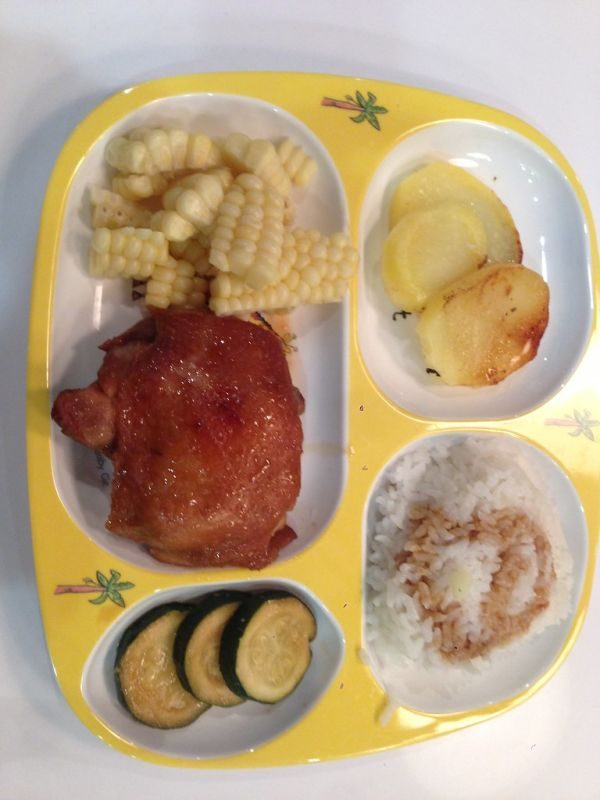

Baked Chicken Thighs

Photo: jencu (CC BY 2.0)
Chicken thighs dipped in mustard butter, coated in a Parmesan and breadcrumb mixture, and baked until golden.
Directions
- Melt butter and add mustard.
- Combine bread crumbs, parsley, cheese, salt and pepper.
- Dip chicken in butter mixture, roll in bread crumbs, place in greased 9 x 13 baking pan. Drizzle with remaining butter. Bake at 400 degrees for about 45 minutes.
- Melt the butter and add the mustard.
- In a separate bowl, combine the bread crumbs, parsley, cheese, salt and pepper.
- Dip each chicken thigh in the butter mixture, then roll in the bread crumb mixture.
- Place the coated thighs in a greased 9 x 13 baking pan.
- Drizzle with the remaining butter.
- Bake at 400 degrees for about 45 minutes.
Goes well with
https://baron-3dl.github.io/normans-kitchen/recipe/baked-chicken-thighs.html